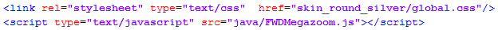
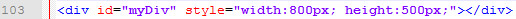
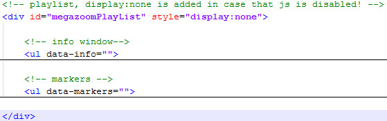
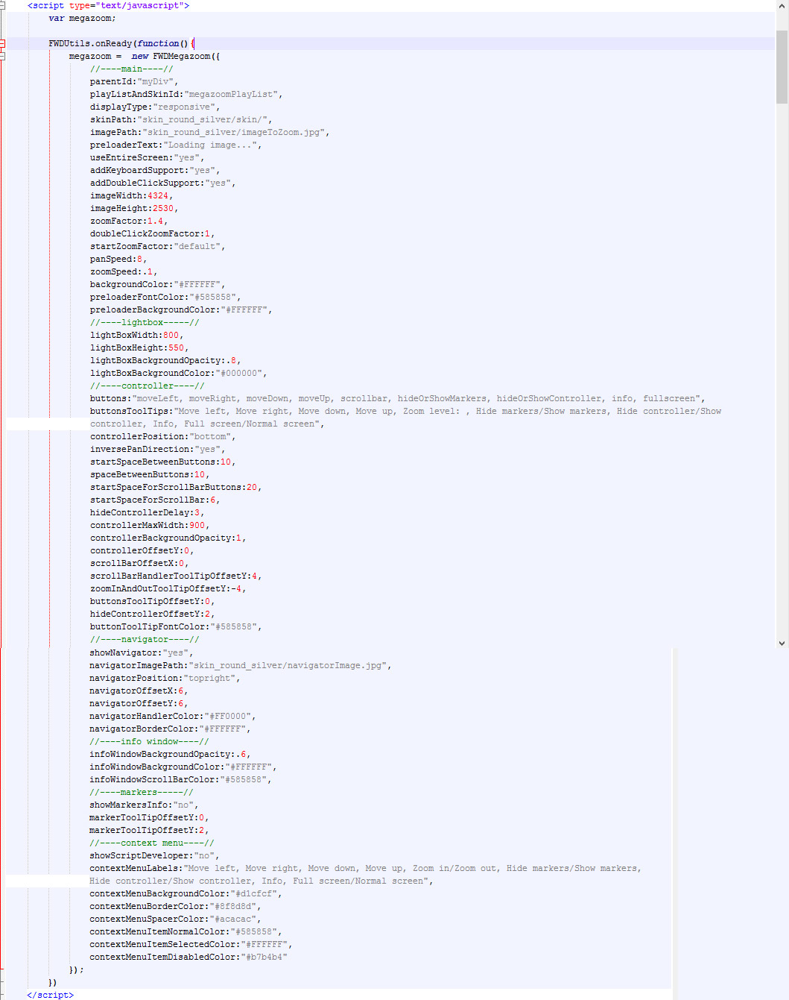
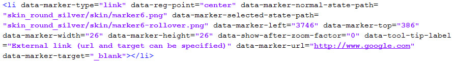
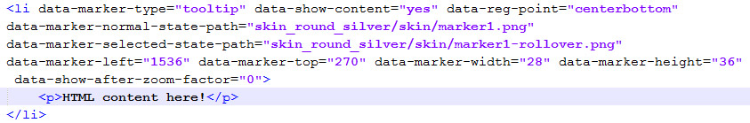
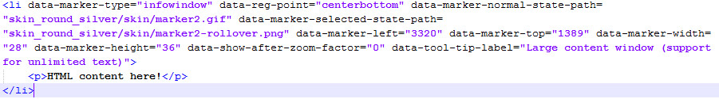

“Megazoom ” Documentation by FWDesign - v1.0
“Megazoom”
Created: 30/09/2013
By:© FWD (FLASH WEB DESIGN)
Email: contact@webdesign-flash.ro
Thank you for purchasing our script. If you have any questions that are beyond the scope of this help file, please feel free to email via our email. Thanks so much!
Table of Contents
- Important notes read this before anything else.
- Preparing the image.
- How to install Megazoom into your html page.
- Constructor parameters.
- Setting up the info window.
- How to setup the markers/hotspots.
- Change image dynamically in the same page.
- Install in wordpress.
- Sources and Credits
A) Important notes make sure you read this! - top
Please note that the Megazoom installation and configuration is not complicated but because it has a lot of customizable settings it might seem complicated, please go through the entire documentation before trying to install it into your own page. Basically what it must be done is to copy some html code from the examples we provided and paste it into your own html page and of course replace the image with your own.
The server is character case sensitive so make sure that the Megazoom settings are identical to those from the provided examples.
Please note that on mobile the images are rasterized by the operating system.
B) Preparing the image. - top
The Megazoom can handle any type of image (.png, .jpg, .jpeg). Save your image with a width or height smaller then 6000px, higher resolutions are possible but is not advised, also if a navigator small image is required just save a smaller version of the image depending on the original image size and format.
C) How to install Megazoom into your html page. - top
This is a small tutorial about how to install the Megazoom into your page. There are three types of display for this Megazoom, responsive/fixed, fullscreen and lightbox. The responsive/fixed display type allows the Megazoom to be embedded into a html page inside a div of your choosing, the Megazoom will adapt its width and height based on the div which acts as its parent, if the page is resized and the parent div is resized with css or javascript the Megazoom will adapt its size. The fullscreen display type will display the Megazoom in fullscreen mode, this means that the Megazoom will fill the available browser width and height. The lightbox display will open the Megazoom into a lightbox over the content of the page.
Installing the Megazoom with a responsive or fixed display:
In the download files there are five .html files which are ending with _responsive_or_fixed.html, each of this examples have exactly the same structure, only some constructor settings, css classes, skin and image are different, you can use one of them to copy and paste the needed html code based on skin that you need, I will use the skin_round_silver_responsive_or_fixed.html the one with the world map as reference but any of the .html files which are ending with _responsive_or_fixed.html will do fine. Also what is important to note is that each .html file has associated a folder which contains the image, skin and a global css file which is used for customizing the markers/hotspots, the folder name is related to the .html file name it is self explanatory.
- Copy and paste the skin_round_silver folder and the java folder into the same folder with your .html file, inside the skin_round_silver folder there are other folders which are self explanatory, the easiest way to add images is just to replace the images that we are using, don't forget to set the image imageWidth and imageHeight options into the Megazoom constructor (constructor parameters), this is really important.
- Open skin_round_silver_responsive_or_fixed.html with a text editor.
- The javascript and css files must be imported, in the head section of your html file add the code from the below image. 
- You need a div into which the Megazoom will be added as a child, so create a div and set an id for it, the id is important because it is passed in the Megazoom constructor, make sure it is unique. The Megazoom is responsive so if you set a width or height of 600px to the created div the Megazoom will adapt based on that, please note that I have used inline css to set the width and height of the div but you set the div size with a css class or javascript, example in the image below. 
- Next step is to copy and paste in the body of your html page the div with the id megazoomPlayList, the id is important because it is passed in the Megazoom constructor (pleae note that this id can have any label id does not have to be "megazoomPlayList"). This div is containing the data for the markers and info window, it is required even if you don't use any markers, if this is the case just leave it blank. Please note that the image that is illustrating this is minified, to view the full content check out the html page content. 
- The first ul tag, the one with the attribute data-info represents the html content for the info window, this window appears when the info button is pressed, if you don't need the info window delete this ul tag but make sure to remove the info label from the buttons option in the Megazoom constructor as well (constructor parameters).
- The second ul tag the one with the attribute data-markers is used to setup the markers/hotspots, please read the how to setup the markers/hotspots section, if you don't need markers/hotspots then delete this tag.
- Next step is to initialize the Megazoom with javascript, in the head section of your html page add the code from the below image. Please note that all parameters are described in the constructor parameters section 
- This are all the step needed to setup the Megazoom, again all this code is located in any of the five .html files which are ending with _responsive_or_fixed.html so you can copy and paste the code easily without errors. Please make sure to read the constructor parameters section to understand all the Megazoom properties.

Installing the Megazoom with a fullscreen display:
- Follow the exact same steps as in the "Intalling the Megazoom with a responsive or fixed display" section, the only difference is that there is no need to create a div as a holder for the Megazoom and in the Megazoom constructor the displayType must be set to fullscreen like this displayType:"fullscreen". Please note that there are five .html files included as reference, their labels are ending with _fullscreen.html, if you like you can just use one of this .html files and replace the images.
Installing the Megazoom with a lightbox display:
- Follow the exact same steps as in the "Intalling the Megazoom with a responsive or fixed display" section, the only difference is that there is no need to create a div as a holder for the Megazoom and in the Megazoom constructor the displayType must be set to lightbox like this displayType:"lightbox" also the constructor is a bit different, instead of instantiating the Megazoom when the page loads it is instantiated when a button is pressed (it does not have to be a button it can be any html element, like an image or a link). Please note that there are five .html files included as reference, their labels are ending with _lightbox.html. Please open any of the related .html files and check out the installation code.
D) Constructor parameters. - top
Please open any of the .html files provided with a text editor as reference.
These parameters represents the possible setting for the Megazoom they are all visible in the below image and described below.
//----main----//
- divHolderId:"myDiv" - the div id into which the Megazoom will be added, please note that this is required only if displayType is set to responsive.
- playListAndSkinId:"megazoomPlayList" - the id of the div element used as the playlist, skin and markers, this div will contain two ul tags used to setup the Megazoom info window and markers.
- displayType:"responsive" - the Megazoom display type, it can be responsive(please note that if you want it to be fixed size this option must be set to responsive as well), fullscreen or lightbox.
- skinPath:"skin_round_silver/skin/" - the skin path, the folder that contains the skin graphics.
- imagePath:"skin_round_silver/imageToZoom.jpg" - The path of the image that you want to zoom.
- preloaderText:"Loading image" - the text that appears while the image is loading.
- useEntireScreen:"yes" - this can be yes or no, if is set to yes the image will use the entire available screen, if is set to no the image will use the entire screen width and the entire screen height minus the buttons control bar height, this option is usually set to yes.
- addKeyboardSupport:"yes" - this can be yes or no, add support for the arrows key to navigate the image once it is zoomed.
- addDoubleClickSupport:"yes" - this can be yes or no, adds double click support for zooming the image on the double click point, please note that this event is not working on older browsers like IE7 and IE8.
- imageWidth:720 - the image width, this number is really important so make sure you are adding it correctly.
- imageHeight:720 - the image height, this number is really important so make sure you are adding it correctly.
- zoomFactor:2 - the zoom factor, what this number does is to limit the image zoom for example if you have a image with a width of 500px and you want it to be zoomed at a maximum of 1000px then set this number to 2, if you want it to zoom to a maximum of 1500px set this number to 3 and so on.
- doubleClickZoomFactor:1.2 - represents how much the image will zoom on double click, the same principle applies as with the zoom factor.
- startZoomFactor:1.2 - a number from 0 to n that represents the start zoom factor, this is usefoul if you want to start the Megazoom with the image zoomed, make sure that this number is not larger then the zoom factor.
- panSpeed:8 - a number from 1 to 100 that represents the pan speed (this number represents how many pixels the image will pan on each interval), the higher the number the faster the pan speed will be.
- zoomSpeed:1 - a number from 0.1 to 1 representing the zoom speed.
- backgroundColor:"#222222" - the Megazoom main background color.
- preloaderFontColor:"#000000" - the preloader font color.
- preloaderBackgroundColor:"#000000" - the preloader background color.
//----lightbox (this is only required if the Megazoom is used with a lightbox display type) ----//
- lightBoxWidth:800 - the lightbox width in pixels, if the browser width is smaller then the lightBoxWidth, this option will be ignored and the lightbox width will be set to the browser current width.
- lightBoxHeight:550 - the lightbox height in pixels, if the browser height is smaller then the lightBoxHeight, this option will be ignored and the lightbox height will be set to the browser current height.
- lightBoxBackgroundOpacity:.8 - a number between 0 and 1 which represents the lightbox main background opacity.
- lightBoxBackgroundColor:#FFFFFF - the lightbox background color.
//----controller (the buttons bar) ----//
- buttons:"moveLeft, moveRight, moveDown, moveUp, scrollbar, hideOrShowMarkers, info, link, fullscreen" - this options represents the buttons from the buttons bar, they are separated by ",". The buttons are displayed in the order in which they are listed here so you can switch the order of the buttons by modifying the list order. If you don't need a button just remove it from the list, for example to display only the left and right buttons set this option like this: buttons:"moveLeft, moveRight". Please note that at least one button is required.
- buttonsToolTips:"Move left, Move right, Move down, Move up, Zoom level: , Hide markers/Show markers, Info, Custom link, Full screen/Normal screen" - this options represents the buttons bar tooltips they are separated by ",". Each tooltip is related to a button so the order of tooltips must be the same with the order of buttons from the buttons option explained above, there are some buttons which requires two tootltip states like the fullscreen button and the hide/show markers button, in this case the tooltip string is separated by "/" for example the fullscreen tooltip is formatted like this: "Full screen/Normal screen". If you don't want to use the tooltips leave this option balnk like this: buttonsToolTips:"".
- inversePanDirection:"yes" - this can be yes or no.
- controllerPosition:"bottom" - this options represents the buttons bar position, it can be top or bottom.
- startSpaceBetweenButtons:10 - the space in pixels between the beginning of the buttons bar and the first button and the end of the buttons bar and the last button.
- spaceBetweenButtons:10 - the space in pixels between buttons.
- startSpaceForScrollBarButtons:10 - the space in pixels between the beginning of the a normal button and the zoom in or zoom out button.
- startSpaceForScrollBar:10 - the space in pixels between the zoom in or zoom out button adn the zoom scrollbar.
- startSpaceForScrollBar:10 - the space in pixels between the zoom in or zoom out button adn the zoom scrollbar.
- hideControllerDelay:3 - the delay in seconds until the buttons bar will hide after a period of inactivity.
- controllerMaxWidth:900 - the buttons bar allowed maximum width in pixels, for example if you want the buttons bar to expand to the maximum available width set it to a high number like 3000 pixels.
- controllerBackgroundOpacity:1 - an integer from 0 to 1 representing the buttons bar opacity.
- controllerOffsetY:10 - the offset in pixels on the y axis for the buttons bar, this mean that if you want to push down or up the buttons bar you can do it by modifying this number.
- scrollBarOffsetX:10 -the offset in pixels on the x axis for the scrollbar and zoom buttons, this is useful if you want to push the scrollbar to the left or right a few pixels.
- scrollBarHandlerToolTipOffsetY:10 -the offset in pixels on the y axis for the scrollbar handler tooltips.
- zoomInAndOutToolTipOffsetY:10 -the offset in pixels on the y axis for the zoom buttons tooltips.
- buttonsToolTipOffsetY:10 -the offset in pixels on the y axis for the main buttons tooltips.
- hideControllerOffsetY:0 -the offset in pixels on the y axis for the show controller tooltip, this only applies when the controller is hidden.
- link:"http://www.google.com" - this represents the link to open when the info button is pressed.
- buttonToolTipFontColor:"#FFFFFF" - the tool tip text color.
//----navigator (the small window that appears when the Megazoom is zoomed to help panning the image) ----//
- showNavigator:"yes" - this can be yes or no, disable or enable the navigator, if this option is set to no then the navigator images are not required.
- showNavigatorOnMobile:"yes" - this can be yes or no, disable or enable the navigator on mobile devices.
- navigatorPosition:"topright" - this can be topright, topleft, bottomright, bottomleft, represents the navigator position on screeen.
- navigatorOffsetX:6 - a number representing the an offset in pixels for the navigator on the x axis (think of it like margins left or right).
- navigatorOffsetY:6 - a number representing the an offset in pixels for the navigator on the y axis. (think of it like margins top or bottom)
- navigatorHandlerColor::"#FF0000" - the navigator handler color.
- navigatorBorderColor::"#FF0000" - the navigator border/stroke color.
//----info window----//
- infoWindowBackgroundOpacity:".6 - a number from 0 to 1 which represents the opacity for the info window background opacity.
- infoWindowBackgroundColor:""#FFFFFF" - the background color for the info window.
- infoWindowScrollBarColor:""#FFFFFF" - the color for the info window scrollbar.
//----markers/hotspots----//
- showMarkersInfo:"no"- this can be yes or no, it is a helper tool for positioning the markers/hotspots.
- markerToolTipOffsetY:10 - an offset in pixels on the y axis for the markers tooltips, this will push down or up the markers tooltip or tooltip window.
//----context menu (this appears when the right click mouse button is pressed)----//
- showScriptDeveloper:"yes"- this can be yes or no, it will add an extra entry in the context menu with a link to our site, if this does not bother you please leave it active it will help us with our work.
- contextMenuLabels:"Move left, Move right, Move down, Move up, Zoom in/Zoom out, Hide markers/Show markers, Info, Custom link, Full screen/Normal screen" - this options represents the context menu items they are separated by ",". Each item is related to a main button so the order must be the same with the order of buttons from the buttons option explained above, there are some items which requires two states like the fullscreen item, in this case the string is separated by "/" for example the fullscreen item is formatted like this: "Full screen/Normal screen". If you don't want to use the context menu leave this option balnk like this: contextMenuLabels:"".
- contextMenuBackgroundColor:"#FFFFFF" - the context menu background color.
- contextMenuBorderColor:"#FFFFFF" - the context menu border color.
- contextMenuSpacerColor:"#FFFFFF" - the context menu spacer color, the line which separates the context menu items.
- contextMenuItemNormalColor:"#FFFFFF" - the color for the a context menu item on normal state.
- contextMenuItemSelectedColor:"#FFFFFF" - the color for the a context menu item on selected state.
- contextMenuItemDisabledColor:"#FFFFFF" - the color for the a context menu item on disabled state.
Setting up the info window. - top
To add html content to the info window replace the html content inside the ul with the attribute data-info, if there is too much text a scrollbar will appear. If you don't need the info window delete the ul tag with the attribute data-info and also inside the Megazoom constructor remove the info label from the buttons option (please read the constructor parameters section). Of course this window can have its html content formatted with CSS, we are using the global.css file to style this window.
How to setup the markers/hotspots. - top
Open with a text editor any of the provided .html files for reference this way the code can be copied and paste
To find the markers position over the image set showMarkersInfo:"yes", this will show a white box that is containing information about left, top and current zoom factor, move the mouse over the image on a spot where you want to add the marker... it does not matter if the image is zoomed.
There are three type of markers/hotspots: link, tooltip and infowindow, they are explained below, they are created visually using two image icons (.jpg, .png or .gif), one for the normal state and one for the selected state when the mouse is over it, also the image size and shape can be any kind. Please note that .gif can be used but on some mobile devices the gif will not animate, only one frame will be displayed!
- The link marker type once is clicked or pressed a new browser window will open, the link and target can be specified.
- The tooltip marker type once is rolled over with the mouse or or touched on mobile a popup window will appear, this window can contain any type of html content but be careful not to add too much text, it is useful if you want to show a small chunk of html content. Please note that the elements which this window contains can be styled with css, if you add images make sure that you add the width and height attributes, otherwise the window will not resize properly.
- The infowindow marker type once is clicked or or touched a window will appear over the Megazoom, this window can contain any type and any amount of html content (this window is exactly the same as the info window which appears when the info button is pressed). Please note that the html tags that this window contains can be styled with css, if you add images make sure that you add the width and height attributes, otherwise the window will not resize properly
Create a marker/hotspot of type link and adding it at a specific position.
Above there is an image which represents a graphical representation of how a link type marker is created. The marker from the above image must be added (copy and paste) into the ul tag with the data-markers attribute, the order into which they are added does not matter. The marker data attributes are explained below:
- data-marker-type="link" - this represents the marker type, in this case it is link.
- data-reg-point="center" - this represents the marker registration point (the marker zoom point), this is a bit difficult to explain but it is easy to use, if you have a marker with a round shape set this option to center,if the marker has a pointer down set it to centerbottom or if the marker has a pointer up set it to centertop.
- data-marker-normal-state-path="skin_round_silver/skin/marker6.png" - this represents the path for the marker normal state image, it can be a .png, .jpg or .gif format and it can have any size or shape.
- data-marker-selected-state-path="skin_round_silver/skin/marker6-rollover.png" - this represents the path for the marker selected state image, it can be a .png, .jpg or .gif file and it can have any size or shape.
- data-marker-left="3746" - the marker left postion.
- data-marker-top="386" - the marker top postion.
- data-marker-width="31" - the marker width, make sure that this has the exact width as the normal or selected image.
- data-marker-height="31" - the marker height, make sure that this has the exact height as the normal or selected image.
- data-show-after-zoom-factor="0" - a number between 0 and the specified zoom factor, if you want to show a marker after the image is zoomed for example 60% set this number to .6, this varies based on the way you want to use this.... To always show the marker set this to 0 (zero).
- data-tool-tip-label="External Link (the url and target can be specified)" - the tooltip label which appears when the marker is rolled over with the mouse.
- data-marker-url="http://www.google.com" - the url of the window which will be open when the markers is pressed.
- data-marker-target="_blank" - the target of the window which will be open when the markers is pressed (this can be _blank or _self).
Once all the markers are added don't forget to disable the heloper tool like this showMarkersInfo:"no", (please read the constructor parameters section).
Create a marker/hotspot of type tooltip and adding it at a specific position.
Above there is an image that represents a graphical representation of how a tooltip type marker is created. The marker from the above image must be added (copy and paste) into the ul tag with the data-markers attribute, the order into which they are added does not matter. The marker data attributes are explained below:
- data-marker-type="tooltip" - this represents the marker type, in this case it is tooltip.
- data-reg-point="center" - this represents the marker registration point (the marker zoom point), this is a bit difficult to explain but it is easy to use, if you have a marker with a round shape set this option to center,if the marker has a pointer down set it to centerbottom or if the marker has a pointer up set it to centertop.
- data-marker-normal-state-path="skin_round_silver/skin/marker1.png" - this represents the path for the marker normal state image, it can be a .png, .jpg or .gif format and it can have any size or shape.
- data-marker-selected-state-path="skin_round_silver/skin/marker1-rollover.png" - this represents the path for the marker selected state image, it can be a .png, .jpg or .gif file and it can have any size or shape.
- data-marker-left="3746" - the marker left postion.
- data-marker-top="386" - the marker top postion.
- data-marker-width="31" - the marker width, make sure that this has the exact width as the normal or selected image.
- data-marker-height="31" - the marker height, make sure that this has the exact height as the normal or selected image.
- data-show-after-zoom-factor="0" - a number between 0 and the specified zoom factor, if you want to show a marker after the image is zoomed for example 60% set this number to .6, this varies based on the way you want to use this.... To always show the marker set this to 0 (zero).
Inside this marker where the "HTML content here!" is showed, HTML content can be added, please note that this type of window supports only a small chunk o HTML content so keep this in mind, also make sure that the image elements have the width and height attribute set otherwise the window will not resize properly.
Once all the markers are added don't forget to disable the heloper tool like this showMarkersInfo:"no", (please read the constructor parameters section).
Create a marker/hotspot of type infowindow and adding to a specific image at a specific position.
Above there is an image which represents a graphical representation of how a infowindow type marker is created. The marker from the above image must be added (copy and paste) into the ul tag with the data-markers attribute, the order into which they are added does not matter. The marker data attributes are explained below:
- data-marker-type="infowindow" - this represents the marker type, in this case it is infowindow.
- data-reg-point="center" - this represents the marker registration point (the marker zoom point), this is a bit difficult to explain but it is easy to use, if you have a marker with a round shape set this option to center,if the marker has a pointer down set it to centerbottom or if the marker has a pointer up set it to centertop.
- data-marker-normal-state-path="skin_round_silver/skin/marker2.png" - this represents the path for the marker normal state image, it can be a .png, .jpg or .gif format and it can have any size or shape.
- data-marker-selected-state-path="skin_round_silver/skin/marker2-rollover.png" - this represents the path for the marker selected state image, it can be a .png, .jpg or .gif file and it can have any size or shape.
- data-marker-left="3746" - the marker left postion.
- data-marker-top="386" - the marker top postion.
- data-marker-width="31" - the marker width, make sure that this has the exact width as the normal or selected image.
- data-marker-height="31" - the marker height, make sure that this has the exact height as the normal or selected image.
- data-show-after-zoom-factor="0" - a number between 0 and the specified zoom factor, if you want to show a marker after the image is zoomed for example 60% set this number to .6, this varies based on the way you want to use this.... To always show the marker set this to 0 (zero).
Inside this marker where the "HTML content here!" is showed, HTML content can be added, please note that this type of window supports only a small chunk o HTML content so keep this in mind, also make sure that the image elements have the width and height attribute set otherwise the window will not resize properly.
Once all the markers are added don't forget to disable the heloper tool like this showMarkersInfo:"no", (please read the constructor parameters section).
E) Change image dynamically in the same page - top
Before reading this section make sure you understand the How to install Megazoom into your html page and Constructor parameters.
This section shows how to change the Megazoom image dynamically in the same page, we have provided examples for each skin. Open with a text editor any of the .html files provided in the download files that are ending with "_thumbnails.html". In this examples we have used basic css to create thumbnails and when a thumbnail is pressed the image will change also.
I will not go into great details about the code because it is fairly simple to understand, what is important to note is that a function called "setupZoomer" is used that accept some parameters (the parameters are self explanatory, also you can add more based on your project), This function is destroying the current Megazoom instance if any and creates a new one based on the function parameters value.
The examples that we have used in the preview page can be found in the demo folder.
Install in wordpress: - top
We have tested the megazoom on wordpress version 3.4, if you don't have the latest version then please install it, on an older version the embedding might not work.
Make sure you read the the other sections in the help file, it is important to familiarize your self with the megazoom settings and what needs to be configured.
You need a ftp program to connect to your ftp server and upload the megazoom files, I use filezila is a free ftp program.
Connect to your server and open the folder in which wordpress is located, in my case it is "wp", in that folder upload any of the files that start with "skin..." based on the skin you would like to use, for example I am using the round skin silver so upload the "skin_round_silver" folder and the "java" folder, the skin_round_silver folder contains the images, skin and css files and the java folder contains the javascript file.
To embed the megazoom into wordpress first login as an administrator, from the menu open pages, add your page title and select the HTML tab not the VISUAL tab, after you do this copy and paste the text from the wordpress.txt file, replace http://www.webdesign-flash.ro/wp/ with your domain name and your wordpress folder label then save the changes, please note that you might update the image to zoom and navigator path if you chose to give them diffrent labels. To setup markers read the How to setup the markers/hotspots
Please note that the wordpress has it's own set of css rules this is based on the theme, each theme is different, some times this css rules might have higher precedence over the one you declare so if this is the case you must use inline css for the description window or use the !important (this info is useful specially for formatting the tooltip and info windows).
F) Sources and Credits - top
This component was made by Tibi from FWD (FWDesign) FLASH WEB DESIGN, for more information and support contact us at contact@webdesign-flash.ro
Once again, thank you so much for purchasing this item. As I said at the beginning, I'd be glad to help you if you have any questions regarding this Megazoom and I'll do my best to assist.
FWDesign